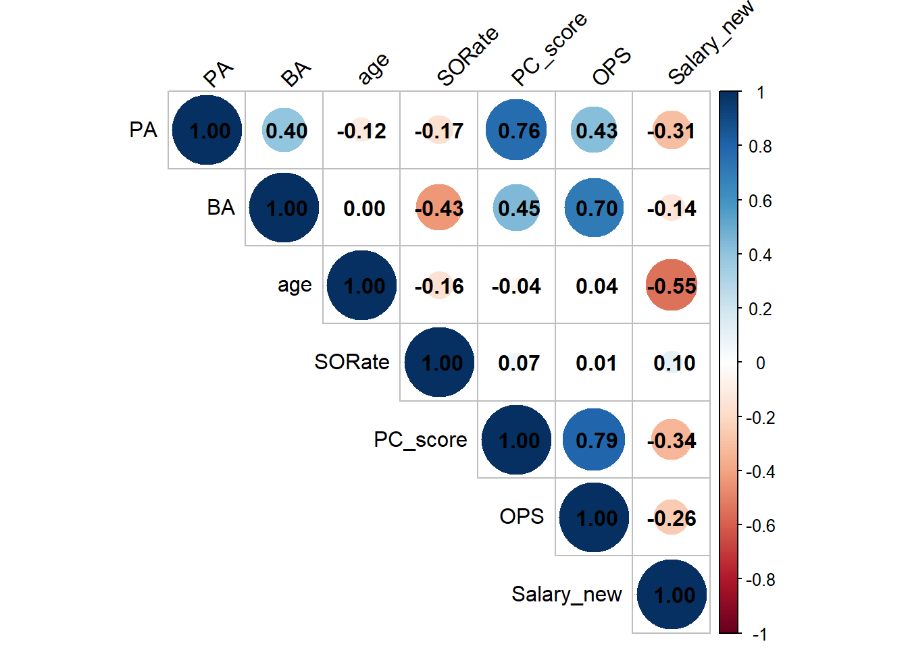
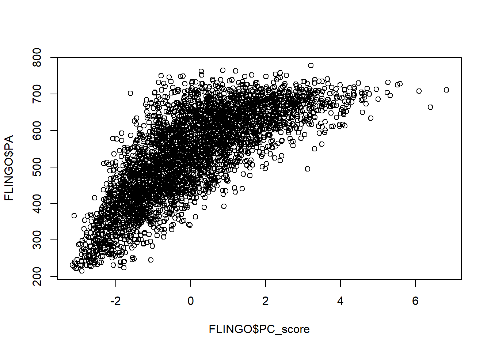
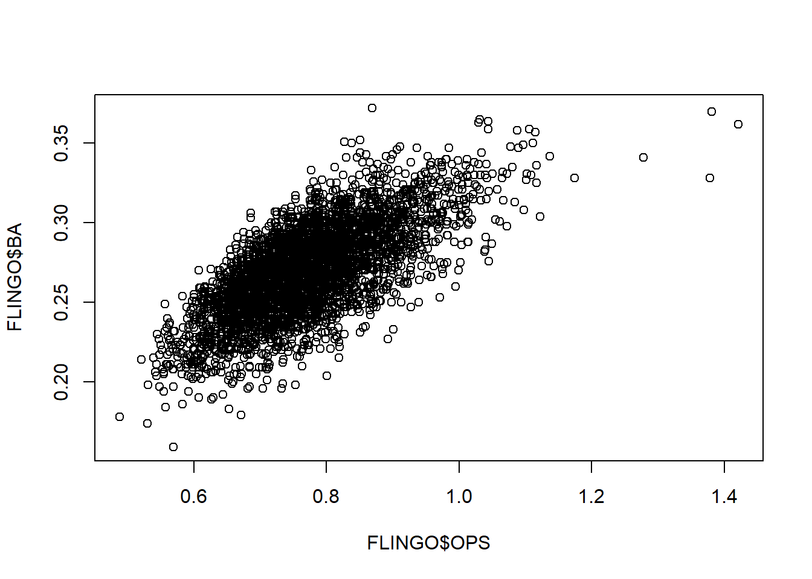
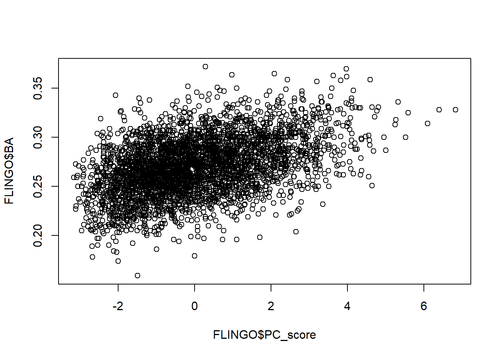
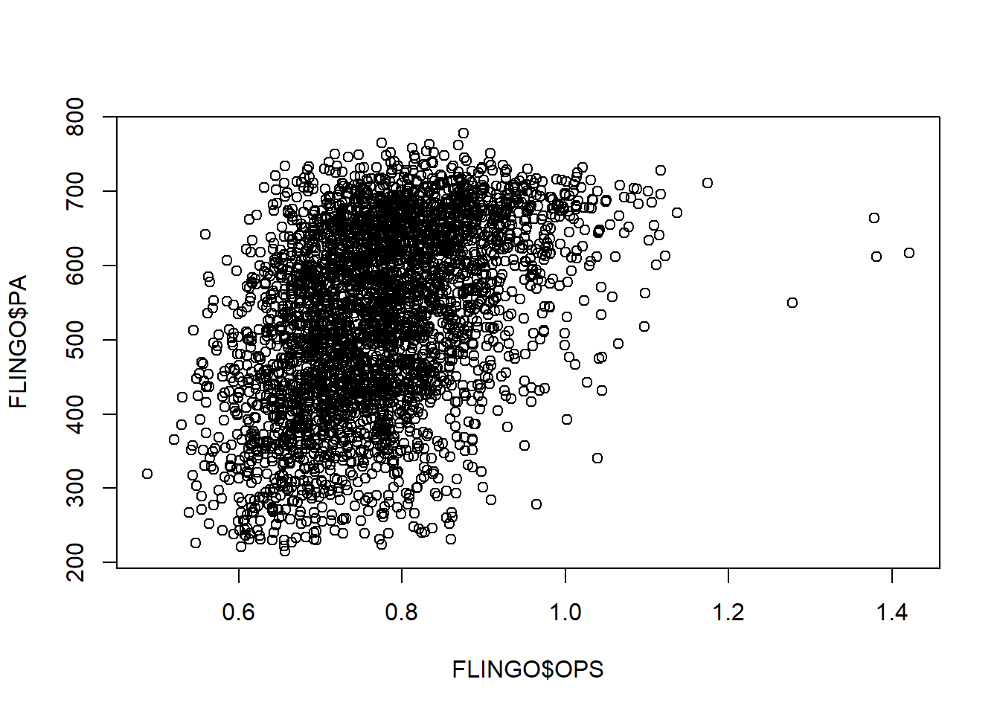
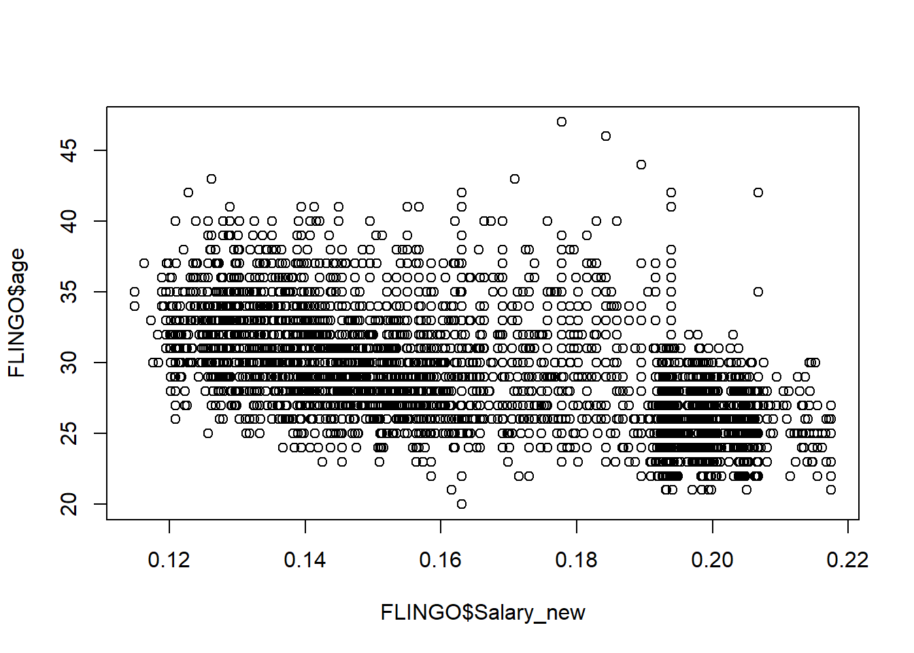
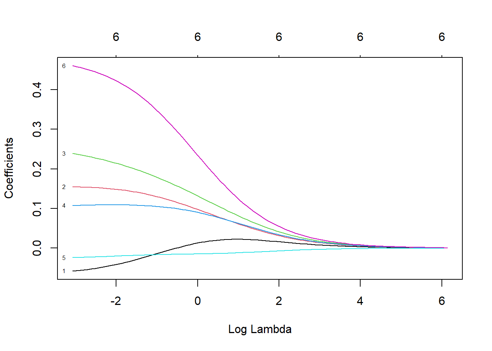

Viewing baseball in recent years has produced so many incredible moments that I am naturally drawn to use baseball as subject matter for this project. I have watched the sport for a very long time, and my primary piece of curiosity comes from an extension of the HR. As it is known to any person remotely involved in baseball, the use of illegal performance enhancing anabolic steroids to make players stronger so that they can hit the ball further has been a part of the game for over 100 years when Babe Ruth used steroids derived from sheep to boost his home run numbers.
Main Question
The sport has definitely had influxes throughout its existence and there have been more egregious examples of cheating than others, particularly Barry Bonds. This led me to wonder, do salaries go up when these influxes of steroids go up? This would make sense since hr’s sell tickets and perhaps some of the most astronomical HR numbers have occurred during this point. So I wanted to compare the salaries of two eras (1985-2000) and (2001-2016) in order to understand if there were any era’s that were being paid more relative to the league average of previous years. This would prove difficult since this would have to factor inflation, but my main quest is to see if there were any salary changes during two 15 year intervals around the time where steroids spiked.
Packages Used
library(Lahman)library(tidyverse)
── Attaching core tidyverse packages ──────────────────────── tidyverse 2.0.0 ──
✔ dplyr 1.1.4 ✔ readr 2.1.5
✔ forcats 1.0.0 ✔ stringr 1.5.1
✔ ggplot2 3.5.2 ✔ tibble 3.2.1
✔ lubridate 1.9.4 ✔ tidyr 1.3.1
✔ purrr 1.0.4
── Conflicts ────────────────────────────────────────── tidyverse_conflicts() ──
✖ dplyr::filter() masks stats::filter()
✖ dplyr::lag() masks stats::lag()
ℹ Use the conflicted package (<http://conflicted.r-lib.org/>) to force all conflicts to become errors
Tidyverse/Tidy models - These packages provided easier and simpler code for statistical modeling project due to their build-in functions specifically built in for specific functions that are simplified for the user such as cross-validation, knn, ridge regression, etc.
Corrplot - specific functions that create a correlation matrix and visually represent it
Ggplot2 - creates plots that I will use to see the calibration of my model
Data Used
The Lahman dataset is a data set created by Sean Lahman, which is the most comprehensive data set ever assembled with baseball stats going back over 100 years. In this data set, every season from almost every contributing pitcher and batter were recorded to show the tallies for the seasons that these players had. These include the full list of counting stats for players such as ‘At Bats’, ‘Strikeouts’, ‘Team’, ‘Age’, ‘RBI’, ‘BB’, ‘IBB’, ‘Hits’, etc. Due to the large size of the data set as well as the myriad of different baseball metrics that are used, it remains as one of the largest and most comprehensive baseball data sets available online today.
Data Limitations
Due to the size of the Salary database, I was only able to look at the years from 1985-2016. All year prior to 1985 were omitted and I was limited with the range of year that I was given.
Exploratory Data Analysis
After downloading the tidy packages and my baseball data set, the first thing to do is define the eras of baseball. Since the salary database only goes back to 1985, the eras were divided into 15 year windows from 1985-2000 and 2001-2016. Since creating each dataset takes multiple steps, the 1985-2000 called ‘old’ will be defined first.
The data set will need additional variables, so it was modified briefly to include these changes.
bat_old_proto <- batting_older |>transmute(Name =paste(nameFirst, nameLast),Year = yearID,team_payroll = team_payroll,PA = PA,BA = BA,HR = HR,R = R,RBI = RBI,age=age,salary=salary,SlugPct = SlugPct,OBP = OBP, # these 3 are already rate statsBBRate = BB/PA, # walks per time at the plateSORate = SO/PA, # strikeouts per time at the plateDoubleRate = X2B/PA,TripleRate = X3B/PA,HRRate = HR/PA,RRate = R/PA,RBIRate = RBI/PA,SBRate = SB/PA,SBSuccessRate = SB/(pmax(SB + CS, 1)), # to avoid NaN bats, lgID # just to have some categorical variables here )
Due to the nature of how statistics are calculated in baseball, a HR when successfully achieved in baseball also counts as an RBI and R. Due to this overlapping nature of the statistic, HR, R, and RBI will be combined into a single variable, which will be called PC_Score using Principal Component Analysis.
Using the recipe function, we will first add the desired variables HR, R, and RBI.
pca_recipe <-recipe(~ Name + Year + HR + RBI + R, data = bat_old_proto) |>## ~ . indicates to use all variables in the dataset as predictorsupdate_role(c(Name, Year), new_role ="id") |>step_normalize(all_numeric_predictors()) |>step_dummy(all_nominal_predictors()) |>step_pca(all_predictors(), num_comp =10)
Then it is added to the data set and the values are posted below.
bat_old_proto <- bat_old_proto |>merge(pca_baked, by =c("Name", "Year"))
bat_old_proto <- bat_old_proto |>transmute(Name = Name,Year = Year,team_payroll = team_payroll,PA = PA,BA = BA,HR = HR,age=age,salary=salary,R = R,RBI = RBI,SlugPct = SlugPct,OBP = OBP, # these 3 are already rate statsBBRate = BBRate, # walks per time at the plateSORate = SORate, # strikeouts per time at the plateDoubleRate = DoubleRate,TripleRate = TripleRate,HRRate = HRRate,RRate = RRate,RBIRate = RBIRate,SBRate = SBRate,SBSuccessRate = SBSuccessRate,PC_score=PC1,PC1=PC1,PC2=PC2,PC3=PC3,OPS=OBP + SlugPct,# to avoid NaN bats, lgID # just to have some categorical variables here )
Now that PC_Score is added to the data set, adding the salary variable will come next. Due to inflation, the salary variable will be standardized into a Salary_ZScore. Since the graph of the salary histogram distribution was not originally a normal distribution, I decided to change the salary variable to 1/(salary^(1/8)) by experimenting with different exponents of salary to find an exponent that would turn the bat_old_proto into something resembling a normal distribution, which in this case is (1/8).
bat_new_proto <- batting_new |>transmute(Name =paste(nameFirst, nameLast),Year = yearID,team_payroll = team_payroll,PA = PA,BA = BA,HR = HR,R = R,RBI = RBI,age=age,salary=salary,SlugPct = SlugPct,OBP = OBP, # these 3 are already rate statsBBRate = BB/PA, # walks per time at the plateSORate = SO/PA, # strikeouts per time at the plateDoubleRate = X2B/PA,TripleRate = X3B/PA,HRRate = HR/PA,RRate = R/PA,RBIRate = RBI/PA,SBRate = SB/PA,SBSuccessRate = SB/(pmax(SB + CS, 1)), # to avoid NaN bats, lgID # just to have some categorical variables here )
Creating the variable for HR/RBI/R called PC_Score.
pca_recipe_new <-recipe(~ Name + Year + HR + RBI + R, data = bat_new_proto) |>## ~ . indicates to use all variables in the dataset as predictorsupdate_role(c(Name, Year), new_role ="id") |>step_normalize(all_numeric_predictors()) |>step_dummy(all_nominal_predictors()) |>step_pca(all_predictors(), num_comp =10)
# A tibble: 3,799 × 5
Name Year PC1 PC2 PC3
<chr> <int> <dbl> <dbl> <dbl>
1 Reggie Abercrombie 2006 -2.18 -0.0632 -0.303
2 Brent Abernathy 2002 -1.81 0.198 0.292
3 Bobby Abreu 2001 3.15 0.636 0.0449
4 Bobby Abreu 2002 1.57 0.855 0.0920
5 Bobby Abreu 2003 1.87 0.610 0.589
6 Bobby Abreu 2004 2.98 0.731 -0.0433
7 Bobby Abreu 2005 2.24 0.572 0.340
8 Bobby Abreu 2007 2.21 1.66 0.632
9 Bobby Abreu 2008 1.87 0.654 0.552
10 Bobby Abreu 2009 1.57 0.743 0.971
# ℹ 3,789 more rows
bat_new_proto <- bat_new_proto |>merge(pca_baked_new, by =c("Name", "Year"))
Adding the variable to the dataset.
bat_new_proto <- bat_new_proto |>transmute(Name = Name,Year = Year,team_payroll = team_payroll,PA = PA,BA = BA,HR = HR,age=age,salary=salary,R = R,RBI = RBI,SlugPct = SlugPct,OBP = OBP, # these 3 are already rate statsBBRate = BBRate, # walks per time at the plateSORate = SORate, # strikeouts per time at the plateDoubleRate = DoubleRate,TripleRate = TripleRate,HRRate = HRRate,RRate = RRate,RBIRate = RBIRate,SBRate = SBRate,SBSuccessRate = SBSuccessRate,PC_score=PC1,PC1=PC1,PC2=PC2,PC3=PC3,OPS=OBP + SlugPct,# to avoid NaN bats, lgID # just to have some categorical variables here )
Standardizing salary after changing Salary_new to 1/salary^(1/8)
One question that I wanted to explore before continuing was “Are the statistics different between the two group i.e. could salary be related to one of the era’s performing better than the other.”
3 metrics that were especially looked at when comparing these eras were the 25%/50%/75% percentiles of PC_Score, BA, and OPS just to eyeball any significant difference in the offensive numbers of the players.
Old BA 25%: 0.252, 50%: 0.271, 75%: 0.292 New BA 25%: 0.251, 50%: 0.270, 75%: 0.289
Old OPS 25%: 0.694, 50%: 0.760, 75%: 0.832 New OPS 25%: 0.703, 50%: 0.765, 75%: 0.831
Old PC_Score 25%: -1.20, 50%: -0.217, 75%: 1.01 New PC_Score 25%: -1.21, 50%: -0.235, 75%: 1.02
The eras are posting similar offensive numbers in 3 significant statistical categories so this can rule out any possible pay disparity over performance being based on statistics but then pondering the top 10%, 5%, 1% of players, these values were also noted to see if there is anything interesting with the outliers.
Old BA 90%: 0.311, 95%: 0.323, 99%: 0.349 New BA 90%: 0.316, 95%: 0.318, 99%: 0.338
Old OPS 90%: 0.904, 95%: 0.957, 99%: 1.06 New OPS 90%: 0.899, 95%: 0.950, 99%: 1.04
Old PC_Score 90%: 2.19, 95%: 2.89, 99%: 4.21 New PC_Score 90%: 2.23, 95%: 2.91, 99%: 4.11
These numbers are very consistent across the board with all the percentiles that were chosen and there is no significant distinction between them just based on the eye test i.e. better statistics can be ruled out as a possible cause of any pay disparity.
Lastly, the correlation matrix was created to see if there are any statistics that are worth looking at for similarity to combine into one variable similar to what was done to PC_Score. This led to finding a correlation between OPS and BA, but OPS is a stat that favors heavy hitters and BA features great contact hitters. To make the distinction between these two types of players and the fact that PC_score is already a heavy hitter stat, OPS and BA were not combined into a single variable.
For example, Ichiro, a dominant contact hitter with a league leading 0.350 BA, would be over looked if BA were omitted because as a power hitter, he was not nearly as powerful as the other players and he would get overlooked in the database if the league leading contact part of his game were omitted.
library(corrplot)FLINGO<-bat_new[,c(4,5,7,14,22,26,29)]ZINGO<-bat_old[,c(4,5,7,14,22,26,29)]BLINGO<-cor(ZINGO)BINGO<-cor(FLINGO)corrplot(BINGO, method ="circle", type ="upper",tl.col ="black", tl.srt =45, addCoef.col ="black")

corrplot(BLINGO, method ="circle", type ="upper",tl.col ="black", tl.srt =45, addCoef.col ="black")
plot(FLINGO$PC_score, FLINGO$PA)

plot(FLINGO$OPS, FLINGO$BA)

plot(FLINGO$PC_score, FLINGO$OPS)
plot(FLINGO$PC_score, FLINGO$BA)

plot(FLINGO$OPS, FLINGO$PA)

plot(FLINGO$Salary_new, FLINGO$age)

plot(FLINGO$BA, FLINGO$SORate)
The distribution for PC_score and PA is logarithmic and so a linear correlation plot would be misleading. The rest of the variables appear to be linear but there are non that I want to use as part of my ridge regression model because of the intel on the players that I would be lacking.
Modeling
Now to actually look at the salary variable in a ridge regression model, first the old and new data sets will be split into 4 data sets called test_old, test_new, train_old, and train_new.
First, the ridge model for the old data set is created below.
How Does Ridge Regression Work?
Regression creates a regularized linear model for the target variable of interest and it will do this in order to determine whether or not there is a significant squared error term. If the square error term is significant, ridge regression will provide a penalty to that variable’s coefficient potentially shrinking it close to zero or removing it all together. This way only variables that are seen as reliable and accurate are used in the construction of our model.
RMSE is used instead of other squared errors because it is in the same units as y making it more in alignment with the variable of interest.
ridge_best_old <- ridge_tune_old |>select_by_one_std_err(metric ="rmse",desc(penalty) # order penalty from largest (highest bias = simplest model) to smallest)ridge_best_old
The predictions are made and a calibration plot is made to make sure that the model works.
ridge_pred_check_old <- ridge_wflow_final_old |>fit_resamples(resamples = batting_cv_old,# save the cross-validated predictionscontrol =control_resamples(save_pred =TRUE)) |>collect_predictions()# using built-in defaults from probablylibrary(ggplot2)# Assume y_actual and y_pred are your actual and predicted valuesdf <-data.frame(test_old, y_pred =predict(ridge_wflow_final_old, new_data = test_old))ggplot(df, aes(x = .pred, y = Salary_ZScore)) +geom_point(alpha =0.5) +geom_smooth(method ="loess", se =FALSE, color ="blue") +labs(title ="Calibration Plot", x ="Predicted", y ="Actual") +theme_minimal()
The workflow is now updated with the new ‘rmse’ value.
ridge_best_new <- ridge_tune_new |>select_by_one_std_err(metric ="rmse",desc(penalty) # order penalty from largest (highest bias = simplest model) to smallest)ridge_best_new
ridge_pred_check_new <- ridge_wflow_final_new |>fit_resamples(resamples = batting_cv_new,# save the cross-validated predictionscontrol =control_resamples(save_pred =TRUE)) |>collect_predictions()# using built-in defaults from probablylibrary(ggplot2)# Assume y_actual and y_pred are your actual and predicted valuesdf <-data.frame(test_new, y_pred =predict(ridge_wflow_final_new, new_data = test_new))ggplot(df, aes(x = .pred, y = Salary_ZScore)) +geom_point(alpha =0.5) +geom_smooth(method ="loess", se =FALSE, color ="blue") +labs(title ="Calibration Plot", x ="Predicted", y ="Actual") +theme_minimal()
`geom_smooth()` using formula = 'y ~ x'

My calibration plot shows that the model follows a cubic distribution and it is predicting values that fit the curve and is more or less reliable in this regard.
In this experiment, the test set from the ‘new’ era will be placed into the ‘old’ model and vice versa to see, which model predicts larger salary z_score values.
predictions_ridge_old_new will be the ‘old model’ with ‘new data’ predictions_ridge_new will be the ‘new model’ with the ‘new data’
rmse(predictions_ridge_new_old, truth = Salary_ZScore, estimate = .pred)
# A tibble: 1 × 3
.metric .estimator .estimate
<chr> <chr> <dbl>
1 rmse standard 0.693
As it turns out, there is a difference between the models and the older model predicts higher salary z-scores for both models indicating that the older players are predicted to be payed more than the new players thus showing that there is a pay disparity between the older group of players during the steroid era and the newer group of players.
Now, I will check for the significance of this disparity to see if any conclusions can be drawn from this model by conducting a two-sample t-test.
Welch Two Sample t-test
data: groupA and groupB
t = -1.1569, df = 1440.3, p-value = 0.2475
alternative hypothesis: true difference in means is not equal to 0
95 percent confidence interval:
-0.10019797 0.02585487
sample estimates:
mean of x mean of y
-0.01244027 0.02473128
Welch Two Sample t-test
data: group1 and group2
t = -1.3815, df = 1231.2, p-value = 0.1674
alternative hypothesis: true difference in means is not equal to 0
95 percent confidence interval:
-0.12042779 0.02090694
sample estimates:
mean of x mean of y
-0.03884412 0.01091631
Upon further investigation, the two sample t.test shows that there is not enough evidence to support the alternative hypothesis that there is a difference of means and thus we conclude not only that the players in the old data set and the new data set have no significant difference in stats but adjusting for inflation no significant differences in salaries as well. With p-values of .13 and .09, we can conclude that there is most likely a mild correlation between old players and higher salaries but not anything conclusive enough to overturn the null hypothesis.
Insights
I saw that the model did hint at a possibility that there was a marginal difference even though we cannot reject the null hypothesis. That being said, there are a few takeaways from this experiment that I gathered. One is that the distributions of the batting statistics across the board for both era’s are very similar at each percentile range. The players are very consistently producing a very similar distribution of HR, BA, etc year after year. Also, the salaries are very skewed for the league best players and the best players as expected would receive the highest pay.
Limitations and Future Work
The clear limitation to this project would be the overall limited-ness of the salary database. As mentioned previously, there was not a very large data set for salaries since they only went back to the 1980s. There was also no clear distinction of the salary cap of each team during this time and no mentions of a player getting payed more because he played for the Yankees for example. Future work could include just looking at the top few teams in the game to separate this dataset even more to account for the fact that the most valuable teams will pay their players the most money.
Note that the echo = FALSE parameter was added to the code chunk to prevent printing of the R code that generated the plot.